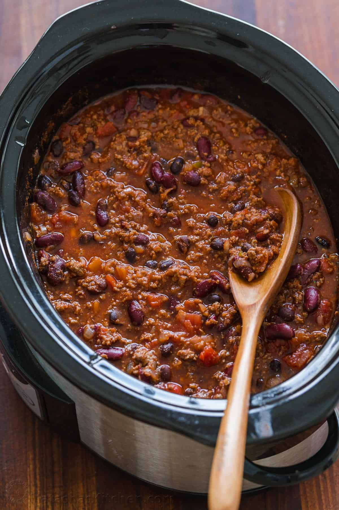

Slow Cooker Chili

Description
An easy slow cooker chili recipe with Ground Beef, beans, tomato sauce,
and the best homemade chili seasoning.
It putters away in the slow cooker for the juiciest beef and rich
flavor.
Ingredients
- 2 lb lean Ground Beef, (90/10 or 93/7)
- 1 large onion, diced
- 3 garlic cloves, minced
- 2 tsp cumin powder
- 2 Tbsp chili powder
- 1 tsp garlic powder
- 1 tsp dried oregano
- 1 1/2 tsp salt, or to taste
- 1/2 tsp black pepper
- 15 oz can black beans, drained and rinsed
- 30 oz kidney beans, two 15oz cans, drained and rinsed
- 30 oz diced tomatoes, with their juice
- 10 oz diced tomatoes and green chilis, with their juice
- 30 oz tomato sauce
Steps
- Place a large skillet over medium-high heat and sauté beef
until it releases fat (4-5 minutes),
breaking it up with a spatula.
- Add onion to the skillet and sauté until tender (4-5 minutes).
Add minced garlic and seasonings:
cumin, chili powder,
garlic powder,
dried oregano, salt and pepper. Cook another
30 seconds stirring constantly. Transfer to a 6 Qt
slow
cooker.
- Add remaining ingredients into the slow cooker: rinsed and drained
beans, diced tomatoes with
their
juice, diced tomatoes and green
chilis with juice and tomato sauce.
Stir to combine and cook on high
for 3-4 hours or on low for 6-8 hours. Season to taste if
desired
and serve warm.
Home